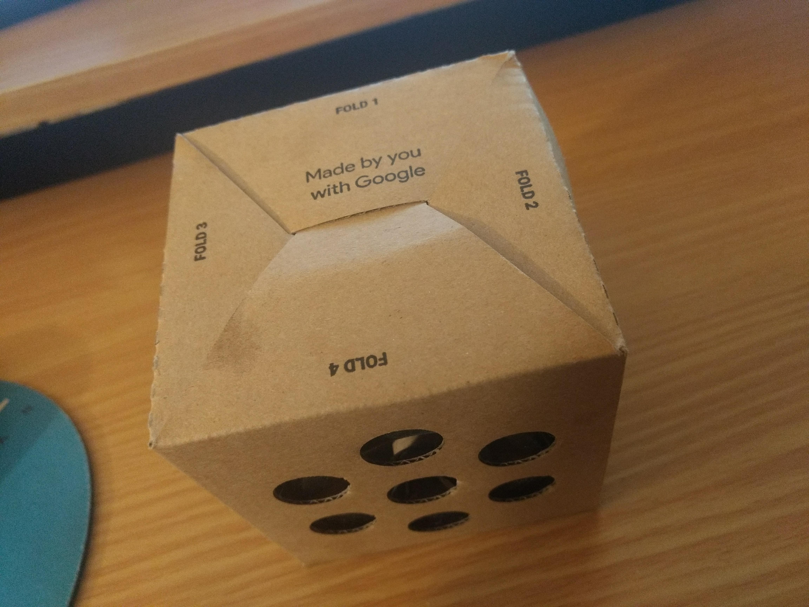

Samvid Jhaveri
Anihilaarg and close readings of Alexa
Overview
This project is divided into 2 parts. First part I will describe is a chatbot I have created with my best friend Parth Mehta and second part of this project is about the close readings and a demonstration of the close reading of the Amazon’s Alexa. This 2 parts are really important as the chatbot I had created was in the last week of December 2017 where as I learned about the close reading later in the April of 2018 but close reading had helped me understand better about the chatbots and I am able to assess my chatbot better from my close readings of Amazon Alexa.
Anihilaarg
I had created a chatbot named Anihilargenesistoriafimiaorgost (Anihilaarg for short) by using Google Voice kit. The chatbot we have created had a different goal in the mind. It was just a short project with us having fun with the general elecetronics of the voice chat which evolved into a much deeper project in the meaning (Which I learned after close reading as you will find in the next section). We started using Tensor Flow library and cloud speech API in order to get the more functionality out the chatbot.
 As for the theme of the chatbot we used the google voice assistant API but we quickly found that some of the functions they had are super hard to change and that is why they have cloud speech API as the playground. We created a chatbot which was rude to the people so here is a typical conversation to the chatbot:
As for the theme of the chatbot we used the google voice assistant API but we quickly found that some of the functions they had are super hard to change and that is why they have cloud speech API as the playground. We created a chatbot which was rude to the people so here is a typical conversation to the chatbot:
Me: “Set an alarm at 7:30am in the morning”
Anihilaarg: “Are you sure, you can wake up this early?”
Me: “Yes I can”
Anihilaarg: “Ok, setting the alarm for 8:30 am, so you won’t shout shup-up google as first thing in the morning!”
Close Reading of Alexa
This chatbot was created just for fun but it had a deeper meaning that I came to understood in the following section of close reading.
When I got the Alexa for the first time, I was really surprised by her ability to shop items from Amazon by only detecting my voice and not anyone else’s. The way it determines a specific user from the voice is really astonishing. There are other functionalities to like playing music, setting up alarms, timers but all of those I have experienced previously with Google Assistant and having different applications is also fairly common use as most of the voice chat bots have this functionality in them but identifying a specific user and order stuff online based on that users preferences is something unique that Alexa possess.
These chat bots definitely generates Eliza effect. Even I started playing with Alexa when she first arrived and soon I started asking questions which she does not have answer for and the whole perception was broken instantly. One surprising thing is the competition between these different chatbots having a major fallback in their design as they limit each others chatbot in their own company territory so if your question comprises an answer which mentions the other chatbot.
One thing I really hate is they are really bad at understanding different accent and they still advertise it everywhere. As I have a really different accent sometimes it is still unable to process anything. I think they should really work into it before jumping down in the Indian market with the product. The limitations of these chatbots are that they are fun for only a little time after using it a month I just don’t feel anything by having it there in my room except worrying that this is a giant spying device which I paid for to specifically spy on me. They should really have a system to ensure the users that the device is not capturing anything when it is in the standby mode.
There is one thing that all of these chatbots have in common is in order to make them start taking input commands you need to say the keyword i.e. Alexa, Hey Siri or Ok Google. Even though this system is there Alexa still sometimes automatically turns itself on and waits for the commands that is I guess pretty annoying.
In summary, chatbots are may be same phenomenon as Eliza/Doctor because evolution of chatbot is following the same curve as Eliza/Doctor so the Eliza effect would be decreasing overtime as we will understand more limitation and inner working of the algorithms of a chatbot.
Using theses close reading an engineer can identify the basic building blocks of a system and try to manipulate them instead of just changing out some higher level of variables i.e. creating applications. These building block are what makes these systems unique but at the same time there is no real reason why they have been used so manipulating them will yield new and different result and may be we can keep on the Eliza effect of a system just by tweaking those building blocks of the same system.
Collaborators
Parth Mehta
Technology used
Google Voice Assistant API, Tensor Flow, Google Voice Kit
Research Method
Close Readings